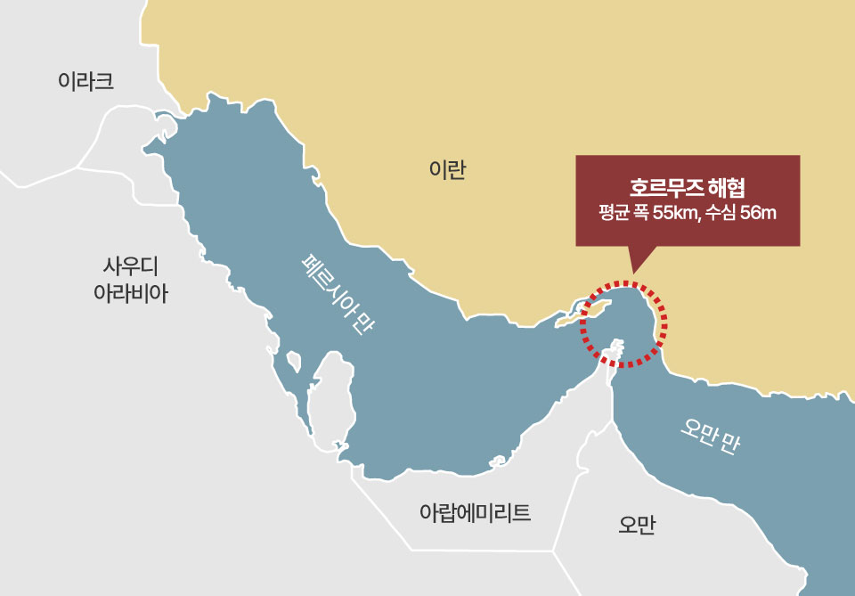
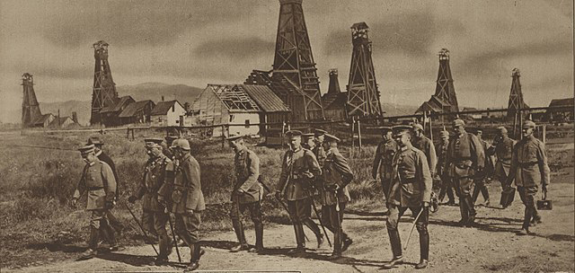
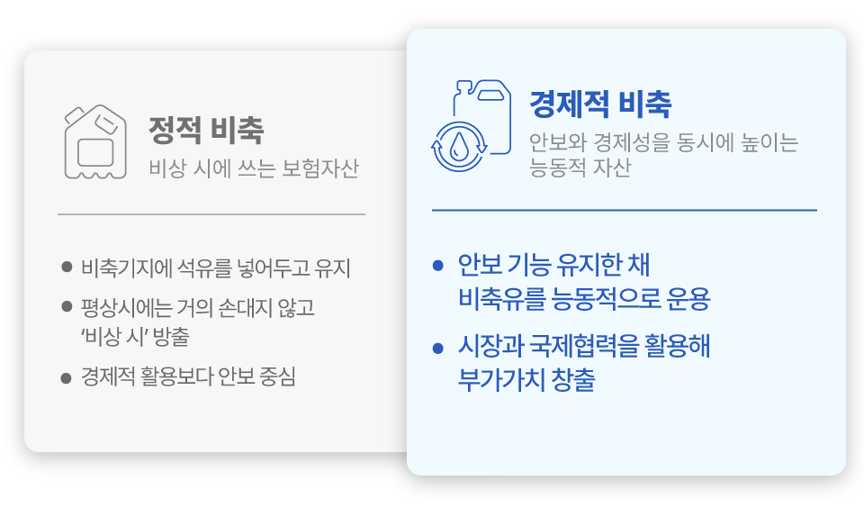
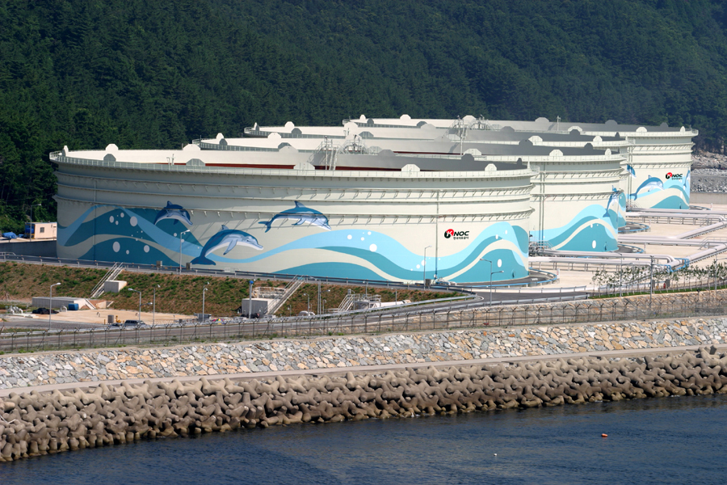

1970년대 오일쇼크가 남긴 석유 안보의 교훈
1970년대 두 차례의 오일쇼크는 석유가 지하에서 갑자기 고갈되는 자원이 아니라, 정치·외교적 변수로 언제든 흐름이 멈출 수 있는 전략 물자라는 사실을 세계 경제에 각인시켰다. 중동 산유국의 감산과 수출 제한이 시작되자 글로벌 성장률과 물가, 각국의 정치적 안정까지 석유 공급에 좌우되는 상황이 펼쳐졌고, 이 경험을 계기로 석유는 단순한 연료가 아니라 국가 안보를 좌우하는 자산으로 인식되기 시작했다. 이에 미국·유럽·일본 등 주요 소비국은 자국 내 석유비축제도를 정비하는 한편 1974년 국제에너지기구(IEA)를 출범시켜 석유 소비국 간 공동 대응의 틀을 마련했다. 미국은 「에너지정책·보존법(EPCA)」에 따라 전략비축유를 도입하고, 유럽과 일본도 전담기구와 비축의무를 갖춘 체계를 구축했으며, IEA는 회원국에 순수입량 90일분 이상의 석유 비축과 위기 시 공동 방출·수요관리 메커니즘을 국제 규범으로 자리매김시켰다.

국제에너지기구(IEA) 회원국 세계지도(2023년 기준)
우리나라 역시 같은 충격을 겪은 수입국으로서 여러 대응에
나섰다.
정부는 1970년대 후반부터 석유개발·비축 기능을 전담할 공기업 설립과
장기 비축계획 수립을 추진했고, 1979년 한국석유공사(Korea National
Oil Corporation, KNOC)를 에너지 안보 담당 국영석유회사로
출범시켰다. 1980년대 초부터는 정부 석유비축계획을 단계적으로
실행하며 지하 비축기지를 건설하고 비축량을 확충해, 세 차례에 걸친
정부 비축계획을 통해 9개 비축기지와 1억 배럴이 넘는 비축 기반을
마련했다. 현재 약 146백만 배럴의 저장능력을 보유 중이며, 약 1억
배럴의 비축유를 확보하고 있다. 1990년대 중반부터는 IEA 가입을
준비하면서 비축 수준을 90일 이상으로 끌어올렸고, 2002년 IEA 26번째
회원국으로 공식 가입함으로써 우리만의 비축체계와 국제 공조 체계를
동시에 갖춘 소비국 대열에 합류했다.
초기의 우리의 석유비축은 전형적인 정적(靜的) 비축이었다.
정부가 재정을 투입해 비축기지에 일정 물량을 채워 두고, 웬만하면
손대지 않은 채 비상시에만 방출하는 구조였다. 경제학의 언어로
표현하면, 막대한 예산으로 쌓아 올린 비축유가 평상시에는 거의
활용되지 않는 잠자는 보험자산으로 존재하는 셈이다. 그렇더라도 예측
불가능한 공급 위기에 대비한 공공보험료라는 측면에서 정적 비축은
당시로서는 불가피한 선택이었다.
탄소중립 담론과 2050 석유 수요 전망의 전환
최근 10여 년간 국제 담론의 중심에는 탄소중립과 에너지 전환이 있었다. IEA 역시 최근 수년간 세계에너지전망(World Energy Outlook, WEO)의 주요 시나리오에서 석유·가스 수요가 2030년 이전 정점을 지나 감소세로 전환될 것이라는 메시지를 강조해왔다. 그러나 2025년 11월 발표된 「WEO 2025」는 이 분위기에 중요한 변화를 줬다. IEA는 한동안 사용하지 않던 ‘현 정책 시나리오(Current Policies Scenario, CPS)1)’를 부활시키며, 현재와 같은 정책 기조가 유지될 경우 석유·가스 수요가 2050년까지도 계속 증가하는 경로를 제시했다. CPS에서는 2050년까지 석유 수요가 명확한 피크 없이 완만히 늘어나는 ‘노 피크(no-peak)’ 경로가 나타난다. 각국이 공표한 정책을 반영한 STEPS(Stated Policies Scenario)2)에서도 과거 전망에 비해 전환 속도가 늦춰지면서, 석유 수요 감소가 2030년 이후 완만하게 진행되는 것으로 그려진다.

* 출처: IEA World Energy Outlook 2025(Nov 2025)
그간 IEA가 석유 수요의 조기 정점과 감축을 상대적으로 더 강하게 강조해 왔다면, WEO 2025는 ‘석유가 최소 수십 년간 세계 에너지 시스템의 중요한 축으로 남을 수 있다’는 현실적 가능성을 보다 분명하게 드러냈다고 볼 수 있다.
결국 국제사회는 탄소중립이라는 방향성에는 동의하면서도 전환의 속도는 당초 기대보다 느리고, 그 사이 석유 안보의 중요성은 오히려 커진다는 현실을 받아들이기 시작했다. “석유는 곧 사라질 자산”이라는 서사는 한 발 뒤로 물러나고, “전환은 진행되지만 그 과정의 중요도가 더 커진 자산”이라는 인식이 힘을 얻고 있다. 이 같은 인식 변화는 에너지 전환이라는 긴 여정을 거치는 동안 석유비축이 구시대의 정책이 아니라 전환기 리스크를 관리하는 핵심 안전판임을 다시 부각시키며, 우리의 석유비축사업의 중요성도 다시금 커질 것이라는 점을 시사한다.
정적 비축에서 경제적 비축으로
우리나라의 석유비축사업을 실행하는 주체는 한국석유공사다. 석유공사는 정부의 석유비축 정책을 현장에서 집행하는 기관으로서, 현재 전국 9개 비축기지를 운영하며 세계적으로도 손꼽히는 규모의 지하 저장능력을 갖추고 있다. 지리적으로 동북아 주요 수요국과 인접해 있고, 해상 물류 네트워크의 교차점에 위치하며, 정유·석유화학 산업이 집적된 우리나라의 조건을 고려하면, 이 비축기지는 단순히 국내 비상용 창고가 아니라 동북아 석유·에너지 허브로 발전할 수 있는 잠재력을 가진 인프라다. 바로 이 지점에서 한국석유공사가 추진하는 경제적 비축사업이 의미를 갖는다.

경제적 비축은 비축의 본질적 목적을 바꾸자는 이야기가 아니다. 핵심은 비상 대응 능력을 해치지 않는 범위 안에서 비축자산을 보다 능동적으로 운용해 안보와 경제성을 동시에 추구하자는 데 있다. 기존의 정적 비축이 안보에만 초점을 맞춘 구조라면, 경제적 비축은 비축의 안보 기능을 유지한 채 시장과 국제협력을 활용해 재정 부담을 줄이고 부가 가치를 창출하는 방향으로의 진화라고 볼 수 있다.
석유비축의 삼각축: 동적 비축, 국제 공동비축, 석유 트레이딩
석유공사가 구축해 온 경제적 비축의 축은 크게 세 가지로 정리할 수
있다. 우선 동적 비축이다. 동적
비축은 말 그대로 비축유를 정적으로 묵혀 두지 않고, 국제유가와 수급
상황에 맞춰 일정 범위 내에서 교체·회전시키는 개념이다. 국제유가가
상대적으로 낮을 때 비축을 확충하고, 가격이 급등했을 때는 일부를
조정해 비용을 절감하거나 수익을 확보하는 식으로, 비상시 필요한
최소 비축량은 철저히 유지하면서 그 위에 형성된 여유분을 시장과
연동해 운용한다. 이를 통해 비축은 “비용만 발생하는 자산”이 아니라
“스스로를 보강하는 자산”으로 전환된다.
둘째는 국제 공동비축이다. 국제
공동비축은 우리 비축기지의 저장공간을 산유국 등에 제공하고, 그
대가로 수익과 안보·외교적 이점을 동시에 확보하는 협력 모델이다.
UAE, 사우디, 쿠웨이트 등 주요 산유국의 원유가 울산·여수 등 국내
비축기지에 저장되는 방식이 대표적이다. 산유국 입장에서는 아시아
수요지에 가까운 전략 거점을 확보할 수 있고, 우리나라는 별도의
대규모 예산 없이도 실질적 비축 여력과 허브 위상을 키우며, 위기 시
추가 공급 옵션을 확보하는 효과를 얻는다.
셋째는 비축자산을 활용한
석유 트레이딩이다. 국제 석유시장은
시점에 따라 항상 가격 차이가 존재한다. 공사는 비축의 본래 목적을
훼손하지 않는 범위에서 원유 매매, 스왑, 저장임대 등을 조합한
트레이딩을 수행하고, 이를 통해 적잖은 수익을 창출하고 있다.
즉, 정리하면 한국석유공사는 동적 비축 개념 아래 비축자산을
활용한 트레이딩, 공동비축 등 수익사업을 진행하고 있고, 그 수익을
다시 비축유 확충과 시설 투자에 재투자하는 구조를 구축해 왔다고
할 수 있다.
이는 전적으로 재정에 의존하던 전통적 비축 구조에서 시장 수익을
활용해 비축 재원을 보완하는 구조로의 전환이며, 에너지 수입
의존도가 절대적으로 높은 우리나라에 특히 의미가 크다. 석유공사가
수행하는 이러한 트레이딩과 공동비축 사업은 눈에 잘 띄지 않지만,
결과적으로는 국민의 세금 부담을 줄이고, 위기 시 사용할 수 있는
비축 기반을 넓히는 데 기여하고 있다.

전환기 에너지 안보와 경제적 비축의 역할
앞서 보았던 WEO 2025는 “에너지 전환은 진행되지만, 현 정책이 유지될
경우 석유·가스 수요와 리스크는 2050년까지 상당 기간 지속될 수
있다”는 냉정한 현실을 시사한다. 우리는 이 긴 전환기를 거의 전량
수입에 의존하는 구조로 통과해야 한다. 중동 의존도가 높은 현재의
수입 구조와 해상 공급망에 대한 취약성을 고려하면, 석유비축은
단순히 석유 몇 배럴을 더 쌓아두는 정책이 아니라
에너지 안보와 시장 안정, 재정 건전성, 국제협력을 동시에
뒷받침하는 복합 전략 플랫폼으로 이해해야 한다.
앞으로 비축정책은 석유뿐 아니라 가스, 수소, 전력망 안정 등 보다
넓은 의미의 에너지 안보 전략과 통합적으로 설계될 것이다. 올해 초
우리 국회가 제정한 「국가자원안보 특별법」의 취지 또한 이러한
통합적 에너지 안보 체계 구축 방향과 맞닿아 있다. 그러나 그렇다고
해서 석유비축의 역할이 퇴색되는 것은 아니다.
오히려 전환기의 불확실성을 감안하면 동적 비축, 국제 공동비축,
트레이딩을 결합한 경제적 비축과 같이 유연하고 지능적인 비축
전략의 중요성은 더 커질 가능성이 높다.
석유는 언젠가 에너지 믹스의 중심에서 한발 물러설 수 있다. 그러나
위기에 대비하는 국가의 시스템과 태도는 여전히 남는다.
한국석유공사가 수행하는 경제적 비축사업은 바로 그 태도를 보여 주는
대표적인 사례이자, 전환기 우리나라 에너지 안보의 핵심 축이다.